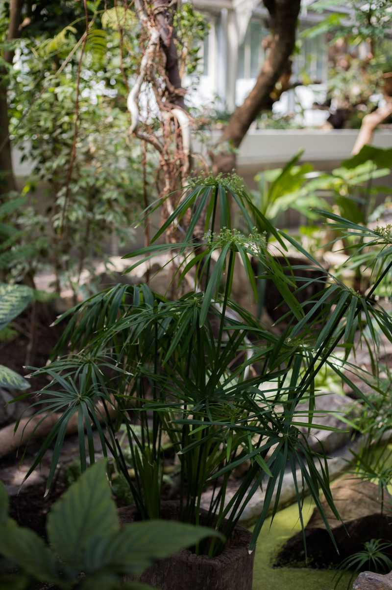
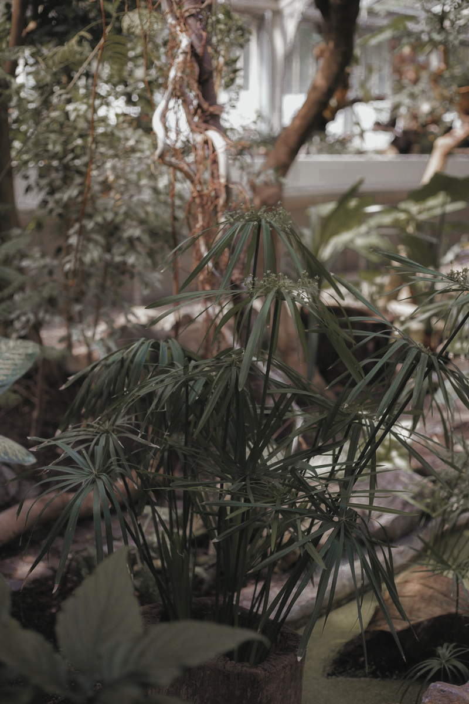
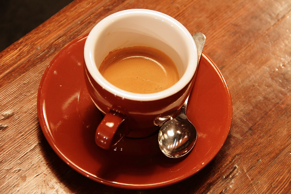
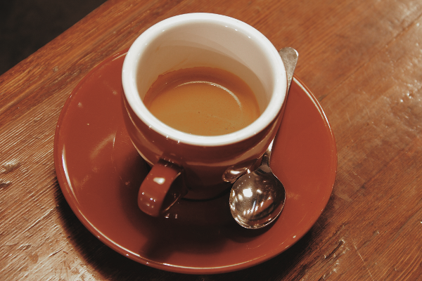
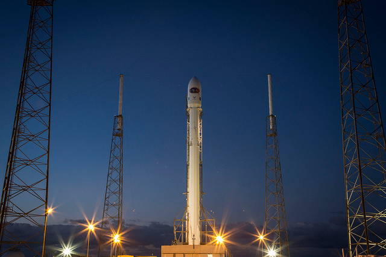
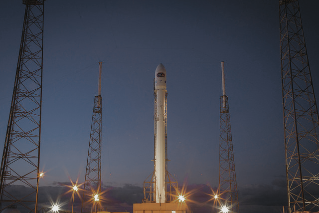

LRC_XMP / PYTHON PREVIEW
找到你喜欢的色调。
温室、咖啡、人像与傍晚天空。切换预设，再拖动分界线比较同一张照片。页面和图片都可离线打开。
以下为 Python 近似试色，含未应用的设置，与 Lightroom 的实际效果可能不同。每个版本都附有处理报告。


原图品川力仿色 · 主版
Jovan Vasiljević · 来源 · Pexels License
品川力仿色 · 主版图片 (报告) · 仅颜色分级 · 简版图片 (报告) · 柔光日常｜风格研究图片 (报告) · 雨窗暖色｜风格研究图片 (报告) · 烈日浓色｜风格研究图片 (报告) · 冷夜暖灯｜风格研究图片 (报告)


原图品川力仿色 · 主版
Rachel Michetti；场地 Pikolo Espresso Bar · 来源 · CC0 1.0
品川力仿色 · 主版图片 (报告) · 仅颜色分级 · 简版图片 (报告) · 柔光日常｜风格研究图片 (报告) · 雨窗暖色｜风格研究图片 (报告) · 烈日浓色｜风格研究图片 (报告) · 冷夜暖灯｜风格研究图片 (报告)
NASA，Eileen Collins 肖像；由 scikit-image 提供 · 来源 · Public domain（来源文档标注）
品川力仿色 · 主版图片 (报告) · 仅颜色分级 · 简版图片 (报告) · 柔光日常｜风格研究图片 (报告) · 雨窗暖色｜风格研究图片 (报告) · 烈日浓色｜风格研究图片 (报告) · 冷夜暖灯｜风格研究图片 (报告)


原图品川力仿色 · 主版
SpaceX · 来源 · Public domain（来源文档标注）
品川力仿色 · 主版图片 (报告) · 仅颜色分级 · 简版图片 (报告) · 柔光日常｜风格研究图片 (报告) · 雨窗暖色｜风格研究图片 (报告) · 烈日浓色｜风格研究图片 (报告) · 冷夜暖灯｜风格研究图片 (报告)
这次应用了什么
- 品川力仿色 · 主版：32 项标量、4 条曲线近似处理；8 项跳过。
- 仅颜色分级 · 简版：8 项标量、0 条曲线近似处理；0 项跳过。
- 柔光日常｜风格研究：24 项标量、1 条曲线近似处理；0 项跳过。
- 雨窗暖色｜风格研究：26 项标量、1 条曲线近似处理；0 项跳过。
- 烈日浓色｜风格研究：26 项标量、1 条曲线近似处理；0 项跳过。
- 冷夜暖灯｜风格研究：24 项标量、1 条曲线近似处理；0 项跳过。
主版跳过 Adobe Color、WhiteBalance、Temperature、Tint、ShadowTint、RedHue、GreenHue、BlueHue。完整方法见 Python 预览说明。